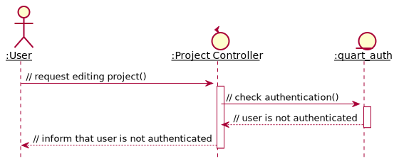

Project Management¶
In this section, we present the system design for project management use cases. Task management use cases, while indeed are part of project management, are discussed in the next.
Create Project¶
The function allow creating projects.
The implementation involves two database tables:
usersdatabase table, whereroleindex is checked.projectsdatabase table, where new document is created.
When user requests to create project, the project controller checks
with quart_auth whether the person is authenticated. The controller then
checks in users database that if the current user is not assistant.
When both conditions are satisfied, controller returns a form for user to
create project. After user fills in the form, the controller requests updating
project database accordingly.
![@startuml
hide footbox
autoactivate on
skinparam sequenceParticipant underline
actor ":User" as usr
boundary ":Create Project Form" as form
control ":Project Controller" as ctl
entity ":quart_auth" as quart
entity ":User" as db_usr
entity ":Project" as db_prj
usr -> ctl : // request creating project()
ctl -> quart : // check authentication()
ctl <-- quart : authenticated
ctl -> db_usr : // check user's role()
ctl <-- db_usr : // new user is not an assistant
ctl -> form : // send form to user()
usr <-- form : // create project form
usr -> form : // enters project name and description()
form -> ctl : // send form()
ctl -> db_prj : // update database()
ctl <-- db_prj : // return
usr <-- form : // success
@enduml](../../_images/plantuml-dd72a0c11228e2d0ba02efdc84500aebe6d19c43.svg)
Figure 12 Activity diagram illustrating the successful project creation¶
If user is not authenticated, controller should inform that user has not logged in.

Figure 13 Analysis sequence diagram for create project by non-authenticated user.¶
If user is an assistant, controller should inform that user are not allowed to create projects.

Figure 14 Analysis sequence diagram for create project by assistant.¶
Show Project Information¶
The function allow showing project information.
The implementation involves only project database table,
where id, students and supervisors indexes are visited
When user requests to create project, the project controller checks
with quart_auth whether the person is authenticated. The controller then
checks in project database that if the current user is a member of project,
and if the project id is existed in database table.
When three conditions are satisfied, controller show the project information.
![@startuml
hide footbox
autoactivate on
skinparam sequenceParticipant underline
actor ":User" as usr
control ":Project Controller" as ctl
entity ":Project" as db_prj
entity ":Project" as db_usr
entity ":quart_auth" as quart
usr -> ctl : // select info tab()
ctl -> quart : // check authentication()
ctl <-- quart : // authenticated
ctl -> db_prj : // check project id is in project database()
ctl <-- db_prj : // return
ctl -> db_prj : // check current user is in project database()
ctl <-- db_prj : // return
usr <-- ctl : // show project info
@enduml](../../_images/plantuml-6172037a4ad387694c11025dd551cfd51a3dc3b9.svg)
Figure 15 Analysis sequence diagram for successfully show project information.¶
If quart_auth returns user is not authenticated,
controller should inform accordingly.
Figure 16 Analysis sequence diagram for showing project information when user is not authenticated.¶
If project id is not in the database, controller must show the error
![@startuml
hide footbox
autoactivate on
skinparam sequenceParticipant underline
actor ":User" as usr
control ":Project Controller" as ctl
entity ":Project" as db_prj
entity ":quart_auth" as quart
usr -> ctl : // select info tab()
ctl -> quart : // check authentication()
ctl <-- quart : // authenticated
ctl -> db_prj : // check project id is in project database()
ctl <-- db_prj : // project id does not exist in project database
usr <-- ctl : // inform that project id does not exist in project database
@enduml](../../_images/plantuml-5ef94647bacdb3621c5cc6a158db983fef4d5c6b.svg)
Figure 17 Analysis sequence diagram for showing project information when project id does not exist.¶
If user is not in the project, controller must show the error
![@startuml
hide footbox
autoactivate on
skinparam sequenceParticipant underline
actor ":User" as usr
control ":Project Controller" as ctl
entity ":Project" as db_prj
entity ":Project" as db_usr
entity ":quart_auth" as quart
usr -> ctl : // select info tab()
ctl -> quart : // check authentication()
ctl <-- quart : // authenticated
ctl -> db_prj : // check project id is in project database()
ctl <-- db_prj : // project id is in project database
ctl -> db_prj : // check current user is in project database()
ctl <-- db_prj : // current user is not a member of project
usr <-- ctl : // inform that current user is not a member of project
@enduml](../../_images/plantuml-a09ee53f0ce992a70c3476383863b5f649f27f48.svg)
Figure 18 Analysis sequence diagram for showing project information when user is not a project’s member.¶
Edit Project Information¶
The function allow editing project information.
The implementation involves only project database table,
where id, students and supervisors indexes are visited
When user navigate to edit tab, the project controller checks whether or not
the person is authenticated. After that, it checks if the current user
is a member of project, and if the project id is existed in database table.
If all conditions are satisfied, controller shows the form for user to fill in.
When user fills the form, controller updates the project table with
the extracted data
![@startuml
hide footbox
autoactivate on
skinparam sequenceParticipant underline
actor ":User" as usr
boundary ":Create Project Form" as form
control ":Project Controller" as ctl
entity ":quart_auth" as quart
entity ":Project" as db_prj
usr -> ctl : // request editing project()
ctl -> quart : // check authentication()
ctl <-- quart : authenticated
ctl -> db_prj : // check project id is in project database()
ctl <-- db_prj : // project id is in project database
ctl -> db_prj : // check current user is in project database()
ctl <-- db_prj : // user is member of project
ctl -> form : // send form to user()
usr <-- form : // create project form
usr -> form : // update project name and description()
form -> ctl : // send form()
ctl -> db_prj : // update database()
ctl <-- db_prj : // return
usr <-- form : // success
@enduml](../../_images/plantuml-bf2d3458db80fd930d11434ed3dab2c3e4378397.svg)
Figure 19 Analysis sequence diagram for successfully edit project information.¶
If user is not authenticated

Figure 20 Analysis sequence diagram for editing project with un-authenticated user.¶
If project not exists in projects database table

Figure 21 Analysis sequence diagram for editing projects when project id does not exist.¶
If user is not a member in the project
![@startuml
hide footbox
autoactivate on
skinparam sequenceParticipant underline
actor ":User" as usr
boundary ":Create Project Form" as form
control ":Project Controller" as ctl
entity ":quart_auth" as quart
entity ":Project" as db_prj
usr -> ctl : // request editing project()
ctl -> quart : // check authentication()
ctl <-- quart : authenticated
ctl -> db_prj : // check project id is in project database()
ctl <-- db_prj : // project id is in project database
ctl -> db_prj : // check current user is in project database()
ctl <-- db_prj : // user is not a member of project
usr <-- ctl : // inform that user is not a member of project
@enduml](../../_images/plantuml-3dd3125a737690952a720da04c821aa39877977a.svg)
Figure 22 Analysis sequence diagram for editing projects when user is not a member of the project.¶
List member¶
The function allow listing the members in the projects.
The implementation involves only projects database table, in which we get
the member list of members. Two fields are being called is supervisors and
students.
When user navigate to member tab, the list of members in the project,
classified as supervisors and students is shown in a form.
Figure 23 Analysis sequence diagram for the member listing process¶
Invite member¶
Since the project is initialized with only the creator, we need a function to invite members. Only who is in the project could introduce a new member.
The design involves the projects database table,
where the members index is to be updated.
When user enters the invited member’s name, the project controller checks
the projects table in the database whether the person is already in
the project, or that user is an assistant, or that user has not registered.
If all three conditions is satisfied, two databases is updated accordingly.

Figure 24 Analysis sequence diagram for successfully invite member.¶
If added user is already in the project

Figure 25 Analysis sequence diagram for adding member when user is existed in project.¶
If added user is an assistant

Figure 26 Analysis sequence diagram for adding member when user is an assistant.¶
If the name is not in users database

Figure 27 Analysis sequence diagram for adding non-registered user.¶